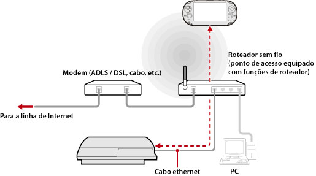

Rede > Utilizando o uso remoto (através de um ponto de acesso)
Utilizando o uso remoto (através de um ponto de acesso)
Conecte o sistema PS3™ a um ponto de acesso utilizando um cabo Ethernet. Use o recurso de rede sem fio de um dispositivo que suporta o uso remoto, tal como um sistema PS Vita ou um sistema PSP™, para conectar o sistema PS3™ através do ponto de acesso.
Exemplo de uma configuração comum

Dicas
- Um roteador sem fio é um dispositivo que adiciona a funcionalidade de um ponto de acesso ao roteador. Um ponto de acesso é um dispositivo que permite que você se conecte a uma rede sem fio. Um roteador é um dispositivo utilizado para compartilhar uma conexão de Internet entre diversos dispositivos.
- Um modem pode vir equipado com a funcionalidade de um roteador. Conecte o sistema PS3™ a um dispositivo equipado com a funcionalidade de um roteador.
- Se o ponto de acesso e o modem forem equipados com a funcionalidade de um roteador, desligue-a em um dos dispositivos. O sistema PS3™ e o dispositivo que suporta o uso remoto devem estar conectados na mesma rede. Se dois ou mais roteadores forem utilizados ao mesmo tempo, o sistema PS3™ e o dispositivo poderão conectar-se em redes distintas e você poderá não ser capaz de utilizar o uso remoto.
Preparando para o uso (sistema PS3™ e o dispositivo compatível com o uso remoto)
Para utilizar o uso remoto pela primeira vez, você deve registrar (conectar) o dispositivo que suporta o uso remoto, tal como um sistema PS Vita ou um sistema PSP™, no sistema PS3™. Para registrar (conectar) o dispositivo, selecione  (Configurações) >
(Configurações) >  (Configurações de uso remoto) > [Registrar dispositivo].
(Configurações de uso remoto) > [Registrar dispositivo].
Preparando para o uso (dispositivo compatível com o uso remoto)
Crie uma conexão de rede para conectar o dispositivo a um ponto de acesso. Se o dispositivo já tiver uma conexão de rede salva, você não precisará criar uma nova. Para obter detalhes sobre como criar uma conexão de rede no dispositivo, consulte o guia do usuário do dispositivo.
Utilizando o uso remoto em um sistema PS Vita
1. |
Em seu sistema PS Vita, toque em |
|---|
 (Uso remoto do PS3) > [Início].
(Uso remoto do PS3) > [Início].2. |
No sistema PS3™, selecione |
|---|
 (Rede) >
(Rede) >  (Uso remoto).
(Uso remoto). 3. |
Em seu sistema PS Vita, toque em [Conectar por rede privada]. |
|---|
Utilizando o uso remoto em um sistema PSP™
1. |
No sistema PS3™, selecione |
|---|---|
2. |
No sistema PSP™, selecione |
3. |
Selecione [Connect via Private Network]. |
4. |
Na lista de conexões, selecione a conexão do ponto de acesso a ser utilizada para o uso remoto. |
 (Remote Play).
(Remote Play).Dicas
- O uso remoto pode ser utilizado dentro do alcance do sinal do ponto de acesso.
- Se você habilitar a configuração de início remoto em seu sistema PS3™, poderá configurar seu sistema para ser ligado automaticamente (Wake on LAN). Para obter detalhes, veja (Configurações) > (Configurações de uso remoto) > [Início remoto] neste guia.
- Durante o uso remoto, ao mudar para a tela de um aplicativo diferente, a conexão de uso remoto será encerrada após 30 segundos.